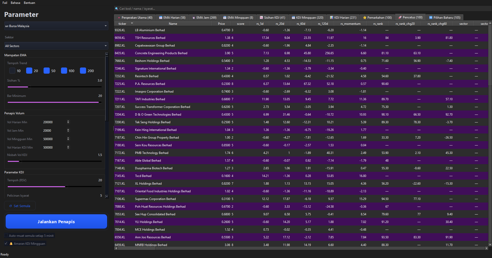
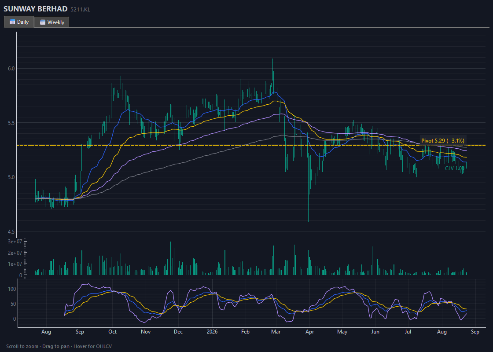
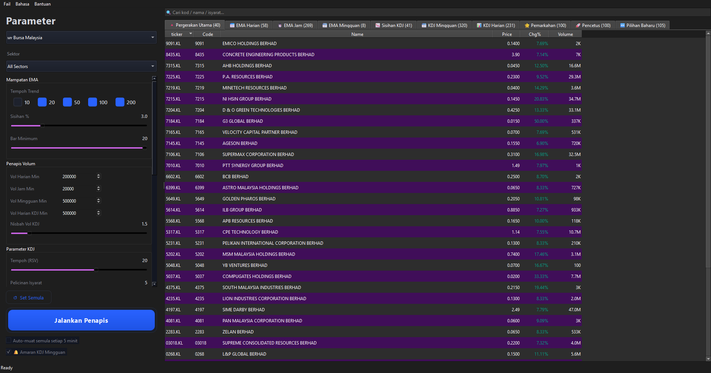

Stock Screener Pro turns 1,000+ Bursa Malaysia stocks into a shortlist of the ones already proving themselves — ranked by relative strength, sector context, structure and risk/reward. It tells you WHY, not just a score.
⬇ Download for Windows (v1.2.1)Our new pulse detector scopes the whole market for the exact pattern professional technicians look for before an expansion:
EMA Compression (daily/hourly/weekly) · KDJ divergence · Daily & Weekly KDJ golden cross · 11-factor weighted scoring · Top movers · New picks board.
TradingView-style dark charts: candlesticks + EMA 20/50/100/200, volume, KDJ, and now Pivot lines with extended labels — zoom, pan, crosshair.
Weekly KDJ golden-cross tray notifications, 5-minute auto-refresh, first-time pick detection, CSV export, per-market defaults.
Every rank comes with plain-language reasons: “RS rank #60 · rank +39 in 20d · Volume Dry-up · near Pivot (1.2%)”. Strength ≠ Setup ≠ Trigger — see the full picture.
Offline activation with a signed code — no server, no subscription. One machine per code, lifetime license, 7-day money-back guarantee.
Run the installer — fully self-contained, no Python, no setup.
Send the seller your machine code; paste your personal activation code once.
Click Run. Open the 🚀 Ignition tab — check RS rank, setups and triggers with reasons.



Everything included — Ignition detector, all screeners, charts, alerts, three markets. No subscription, no ads, no data fees.
Order on Shopee — search “Stock Screener Pro” or contact the seller. Your personal activation code is delivered after purchase.
No — the installer bundles everything (Python, libraries, data sources). Just run the .exe.
No. One-time purchase, lifetime license, offline activation, one machine per code.
Yahoo Finance (Bursa + US) and AkShare (Shanghai) — free sources, fetched live, cached locally per day.
No — each code is bound to one machine. If you change computers, contact the seller for a replacement.
Click More info → Run anyway. The build is unsigned (normal for small software); it is safe. Restore it from quarantine if your antivirus blocks it.